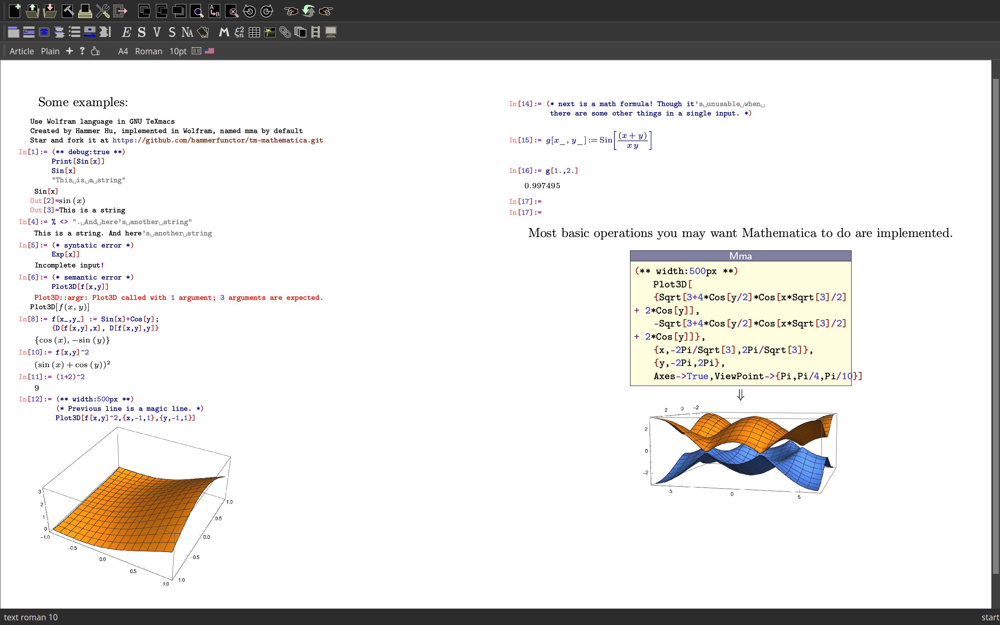

Table of Contents
1 A Mathematica plugin for TeXmacs

Figure 1: Use TeXmacs as the frontend of everything!
1.1 Installation and Use
To use this plugin, you need compile manually. Check following steps:
- Confirm your Mathematica or Wolfram Engine support WSTP interface 4 (if you can find in
WSTP_PATHa file namedlibWSTP64i4.so, which is described below), unicode support is incorporated since interface 4. If your Mathematica doesn't support interface 4 and you do want to use it. Modify all*UTF8String*to be*ByteString*may make it work. - Confirm
mathis inPATH, which is one executable binaries of Mathematica kernel. - put this repo under
${TEXMACS_HOME_PATH}/pluginsand name itmma, which is usually~/.TeXmacs/plugins/mma(this is essential, since the package is namedmma) - Find your directory of Mathematica compilation additions for WSTP and make it
WSTP_PATHvariable inMakefile. SeeMakefilefor details.
PS: This plugin is tested under ArchLinux, under other Linux distros it most likely works as well. Mac user may
need to do a little hacking in Makefile. For I'm not familiar with Windows, Windows users may need to do some
work by hand. Pull requests is welcome.
PS2: I'm actually not familiar with C++, so if I wrote some shit code, don't pour scorn on me :).
1.2 How it is implemented?
TeXmacs has had a Mathematica plugin, which is written in 2005. I sadly found it cannot handle graphics output and error messgae correctly for now, then I dicided to write one myself.
Transformation of data is mostly done in Mathematica end, and I just wrote a Switch to format the data to string.
Then do recognize the returned string as: latex segment string, EPS string (ExportString[g,"EPS"]),
plain string, error message string or symbol string. Graphics are displayed via postscript
(return \2ps:<postscript string>\5 to standard output), for now only
Mathematica object with head Graphics or Graphics3D are regarded as graphics and correctly converted.
If you find other types worth handling, hack it!
From the newest Mathematica docs (basically tutorial/RunningTheWolframSystemFromWithinAnExternalProgram in reference),
the types of Wolfram Language packets returned by WSNextpacket consist of:
| Wolfram Language Packet | constant | meaning |
|---|---|---|
| ReturnPacket[expr] | RETURNPKT | result from a computation |
| ReturnTextPacket["string"] | RETURNTEXTPKT | textual form of a result |
| InputNamePacket["name"] | INPUTNAMEPKT | name of a input line |
| OutputNamePacket["name"] | OUTPUTNAMEPKT | name of a output line |
| TextPacket["string"] | TEXTPKT | textual output form from functions like Print |
| MessagePacket[symb,"tag"] | MESSAGEPKT | name of a message generated by the Wolfram Language |
| InputPacket["prompt"] | INPUTPKT | request for a response to an Input function |
| CallPacket[i,list] | CALLPKT | request for a call to an external function |
As a lite frontend, we only need to handle RETURNPKT, TEXTPKT and MESSAGEPKT for below reasons:
INPUTNAMEPKTandOUTPUTNAMEPKTare trivial.RETURNTEXTPKTis for the return ofEnterTextPacket, as explained inJLink/tutorial/WritingJavaProgramsThatUseTheWolframLanguage, which is not the way we are to implement the session.- Users will not try to call external programs in an tm document, thus
CALLPKTwill not be returned. INPUTPKTis also redundent for a session in tm documents.
I have to struggle to find a graduate school, so issues and pull requests may not be replied in time.